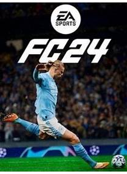

Welcome to the best gaming shop at the moment. There are ranges of variious desired games. Some porpular games and latest released games are;
Ultimate Edition is the ultimate football experience for fans of the sport. Developed by EA Sports, this game takes football to a whole new level with cutting-edge technology and innovative gameplay features. The game introduces HyperMotionV, a groundbreaking technology that brings the most realistic and fluid football animations ever seen in a video game. Every move, every touch, and every tackle is captured with unparalleled precision, making the gameplay incredibly lifelike and immersive.
.jpeg)
Deluxe Edition takes players on an exhilarating journey through an ancient and mystical world, where they assume the role of Basim, a resourceful street thief with a dark past and haunting visions. Tasked with uncovering the truth, Basim becomes entangled in an ancient conflict, unraveling secrets that will redefine his destiny forever.
God of War Ragnarok will take you to the previously unreachable Vanaheim, Svartalfheim, and Asgard—as well as to new areas from locations featured in the last game. Exploring the realms will take you everywhere from verdant, otherworldly jungles to intricate subterranean mining networks. Kratos, still bearing the knowledge of his past mistakes, wants to spare Atreus the bloody lessons he learned from his conflict with gods. He wants to keep his son safe, above all, and their confrontation with Baldur has vindicated the belief that only tragedy will come from further entanglements with the Aesir.
Sifu is an action-adventure game that features a complex combat system. The main character's name is Sifu. He is a young kung fu apprentice on a path of revenge. His family is dead and the protagonist wants to find the killers of his family. He has no allies at all, only one mysterious pendant helps on his path. You will have to go through different areas of the city, battling street thugs and mighty corporates.
EA SPORTS UFC 5 is as real as it gets. Powered by Frostbite engine’s advanced rendering capabilities, your favorite fighters now have unparalleled character likenesses to complement next-level environment fidelity that’ll make their walk to the Octagon feel like a PPV main event. The all-new Real Impact System brings the intensity and strategy of a fight to life, as cuts and strikes absorbed can affect mobility, defence, stamina, and more.